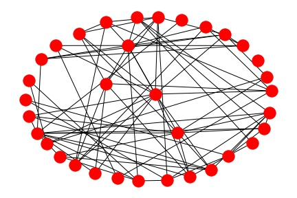
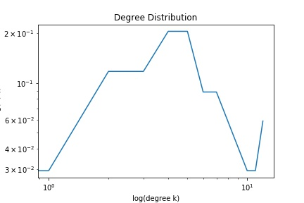

We chose the biological database PubMed, where each entry is a paper. We chose this database because it contains a variety of published papers regarding biotech research, and as such can be considered a biological database. Here, we use biology to mean the scientific study of living organisms.
Our criteria for determining similarity is inspired by the Erdos number used to describe the connectedness of authors of mathematical publications. While the Erdos number measures the degree of separation between human actors based on the undirected relationship of co-authorship, we measure the distance in terms of citations between papers in the same database.
We propose that the distance between papers in the same database can be computed by building a directed graph G = (V, E), where every vertex v ∈ V represents one of the n papers in the database. For each citation from a paper p to another paper q in the same database, assign a single directed edge epq from a corresponding vertex vp to a vertex vq in G.
We can represent the edges between each of the vertices representing the n papers in a database using an adjacency matrix. Below is an example illustration:
The two entries we chose are:
Paper 1: KB-Rank: efficient protein structure and functional annotation identification via text query.
Paper 2: Protein bioinformatics databases and resources.
The second paper is referenced by the first, thus the distance is 1.
Below is a graph of the path between these two papers:
Since there is a path of length only 1 between these two papers, they are closely related.
Authors of Paper Summarized: Yichao Zhou, Yuexin Wu, and Jianyang Zeng
Source
In a 3-D backbone structure, the protein design problem determines the optimal sequence of n rotamers (discretized protein side chains) that satisfies physical chemical potential functions and stereochemical constraints. This involves calculating the GMEC, global minimum energy conformation, by finding the sequence that minimizes the objective function representing the total energy. This is done by using a search graph over the conformational space. Current solutions have fallen into two groups: ones which approximate the GMEC, but can be trapped in local energy minimas and lead to a poor final solution; and ones that provide an exact solution, such as A*, but whose search spaces are too large. This 2016 paper from Journal of Computational Biology, the journal of Recomb, proposes a modified AND/OR branch-and-bound search algorithm which solves the problem by getting rid of the rotamers known not to be part of the optimal solution. AND/OR is a search algorithm performed on a rooted tree that alternates between OR and AND nodes. Each OR node branches into different options represented by AND nodes, and each AND node branches into different possible outcomes as represented by OR nodes. The solution is a conditional plan, represented as a subtree that begins at the root, selects one AND child from each OR node, and includes every AND node's OR child that results in a goal leaf [1]. For this paper, each child node from an OR node specifies a rotamer from the residue. Each AND node branches into subspaces which represent separate residue total energies. The lowest energy conformation is determined suboptimally for an individual branch, and a global minimum energy is maintained based on the branches explored so far. The search proceeds depth-first, requiring only n mutable residues to be kept in memory at a time. If the minimum energy for a branch is greater than the temporary value kept for the global minimum energy, that part of the search space is pruned. The solution subtree represents a valid conformation. One combinatorial algorithm that can be applied to this kind of tree is bucket elimination, in which each node c that represents a rotamer would store the lower bound on the energy of its subtree, assuming the rotamers that are c's ancestors in the tree representation. However, this requires some nodes to store large energy tables. Using a mini-bucket heuristic, through an algorithm that approximates bucket elimination, reduces the storage per node by allowing some of these energy tables to be broken up and split across two different nodes. Breaking the energy down to finer levels speeds up the heuristic so that larger trees can be processed. The algorithm was tested to be both space- and time-efficient in minimizing the energy conformation compared with other existing algorithms.
This was an interesting example of applying artificial intelligence to a biological problem. It incorporates a complete pipeline of mapping biological concepts onto a mathematical problem, surveying algorithmic solutions of varying complexities, discussing the mathematical complexity, making experimental verifications on biological data, and including additional computer hardware considerations. The end of the paper identifies opportunities for other researchers to speed up the run time even more and estimate bigger proteins by adding parallel processors. Providing the groundwork for future development is a strength.
However, as much of the argument depends on the relative complexity of their solution to other proposed methods, some necessary statistics about the operating space and time of other techniques are missing from the real biological experiment. The authors could strengthen their argument by going more precisely into the estimated run times of these existing techniques.
If we were to present this paper to the class, we may expand more on the other algorithms referenced in the paper. However, we have already begun to develop a different project idea.
Bibliography
[1] Norvig, Peter and Stuart J. Russell (2015). Artificial Intelligence: A Modern Approach. Third edition. Delhi: Pearson.
According to the definition from the American Psychiatric Association, a person who has social anxiety disorder (SAD) has exaggerated reactions in circumstances of perceived social judgment[1]. Due to an overactive limbic system and maladaptive emotion regulation, sufferers of social anxiety have a heightened response to threat, as shown through negative thought patterns, as well as greater attention to negative facial expressions[2]. Emotion regulation has to do with the way a person forms and manages an emotional response. It may involve moderating, reducing the volume of, or suppressing an emotion. Problems with emotion regulation are thought to be the source of mental disorders. One example of a distressing form of emotion regulation is rumination - the repetitive, pessimistic, self-focused thought that characterizes depression[23]. Existing biopsychosocial medical research has shown reduced activity in the ventromedial prefrontal cortext for PTSD subjects during emotion regulation[24].
One of the most effective treatments for SAD and related disorders is cognitive behavioral therapy (CBT), a practical, structured, goal-directed approach towards psychotherapy developed by psychiatrist Aaron Beck of the University of Pennsylvania and his daughter Judith[21]. It is based on the idea that how a person responds to a situation is relative to how that person thinks about what that situation means, rather than a property inherent to the situation[19]. People who struggle with internalizing disorders such as SAD, depression, and PTSD are thought to have deficits in their ability to reappraise a negative situation so that it is not such a source of stress. Thus, CBT teaches cognitive restructuring, a way to reappraise how one thinks of a negative situation to see it in a more realistic way[20].
An emotion regulation task (ERT) is a standard task in CBT to test a subject’s ability to down-regulate a negative emotion[3]. Our study examines existing data collected from ERT performed on 2 groups of subjects: a group of SAD patients (labeled DZ), and a healthy control (labeled HC). Within each group, we have data from 3 tasks for each participant: in the the first (1) task, each participant viewed a neutral image with no emotional stimulators (landscape, everyday activities, etc.). In the second (2) and third (3) tasks, each participant viewed an image with negative emotional stimulators (disasters, accidents, etc.), and was asked to maintain or reappraise, respectively, their negative emotions by re-interpreting the image.
Neurons, the cells in the brain, communicate with each other through electrochemical reactions. Electroencephalography (EEG) is used to detect problems with these electrical signals, which may indicate a neurological disorder, by placing electrodes on a person's head[4, 5, 6]. An electrode is a metal conductor[7]. In this study, we will be examining brain activity using EEG.
The data for this study is stored in brain network matrices, which we can apply network analysis techniques to. Network analysis involves analyzing the nodes on a graph, and determining the communities, or subgraphs, they belong to[8]. Properties like clustering coefficient, average path length, centrality, and modularity are commonly used in network analysis. The clustering coefficient of a node v is the number of edges between nodes adjacent to v, divided by the total number of possible edges between nodes adjacent to v [18]. One common global network property is the average clustering coefficient[17]. The shortest path is the shortest distance between 2 nodes. The average path length is the average shortest path between any 2 nodes[19].
Research has shown that if brain damage, injury, disease or trauma causes edges or nodes to be removed, the more central these components are, the worse the implications may be for the rest of the brain[9]. This study will collect related parameters of network properties and extract network differences in activation patterns during ERT.
SAD is a disorder with significant costs to professional and academic productivity[10]. Research using conventional fMRI imaging signal contrast has revealed that social anxiety patients are more easily affected by negative images and struggle to down-regulate negative emotions[11]. Moreover, sufferers of social anxiety disorder show stronger connections in the left amygdala than healthy controls do[3]. However, it remains unknown what the active patterns on a brain network scale are for SAD patients. Graph theory is a feasible approach to study the SAD brain network. Application of graph theory to the resting state network has uncovered disruptions in fMRI-based functional networks in anxiety patients. Analyzing the active patterns of the diseased brain network will provide a data-driven approach to understanding the inner mechanism of the SAD brain on a whole-brain scale. Hopefully, this can provide insight into identifying brain regions of interest for SAD treatment and diagnosis.
We aim to discover underlying patterns for the SAD brain during emotion regulation by analyzing EEG-based SAD networks during emotion regulation. We will explore global network properties such as clustering coefficient, average path length; and edge and nodal properties such as degree distribution, betweenness, and centrality. Our goal is to see whether performing existing techniques on this particular dataset will provide insights that reinforce or challenge previous findings.
This study makes use of EEG data that had been collected from twenty SAD patients and twenty healthy subjects while performing the ERT. The test subjects were pre-classified as SAD or healthy based on a cutoff with a good treatment sensitivity and specificity on the Liebowitz Social Anxiety Scale (LSAS)[22]. These tests had been conducted under Dr. Heide Klumpp from the Mood and Anxiety Research Program at UIC. The subjects are demographically matched in terms of education and gender, and their specific labels and identifying information have been erased under IRB protocol*. The result of each task, for each test subject, has been mapped onto a 34*34 square matrix via a functional mapping algorithm Weighted Phase Lag Index[12]. We can think of this like a weighted adjacency matrix. 34 corresponds to the number of recording electrodes per subject. Each electrode is a channel[13]. Each channel also has a numeric mapping between 0 and 33, and each array entryi, j indexes into the strength of the connection between two channels i, j. The strength is a float between 0 and 1 (see the color code in Figure 1 for example). Each subject's matrix is averaged over a 5-minute recording in which they viewed 20+ images, so the effects of any image that could have triggered exceptional responses are smoothed out. Every matrix can be converted into an undirected, weighted graph, in which each electrode is mapped to a node (see Figure 2 for an example graph representation of two selected electrodes).
Figure 1: An example of an EEG connectivity matrix during the resting state[2].
Figure 2: Two frontal channels' edges on the electrodes' location-based graph[2].
We will perform our research in 2 stages:
1. Exploratory Analysis
2. Proposed Product
We expect differences in the behaviors of the 2 test groups, but knowing how they perform differently on a network level will provide more insight into the neural activation of SAD patients, which will be meaningful for future treatment. For basic global properties, we will run the standard statistical t-test in R to see if there are group differences. Depending on the parameter that our exploratory analysis suggests to be relevant to the data, we may use two-way ANOVA to investigate the task-group interaction. Looking into the graph properties for the brain under these tasks will provide more insight into the overall network differences in emotion and cognitive processing of social anxiety patients.
Figure 3: Sample Chord Diagram built in D3.js[14].
In the first stage, we will use visualization through D3 to determine which nodes to investigate. The chord diagram has commonly been used to visualize adjacency relationships in matrix data for network analysis and has numerous libraries to support it[16]. We will convert each input brain network matrix for an individual test subject on an individual task into an intermediate output: a chord graph that visualizes the pairwise synchronicity between each electrode channel. Compared to the numerical format of the matrix, the visualization will provide more intuitive insight into the patterns of network differences per task between the sick patients and the control group, which we can then follow in the next stage.
In addition to the properties listed in our Specific Aims, we will also investigate a community property: modularity. For all the property analyses, we will leverage open-source tools such as the NetworkX library, built upon Python's scientific packages[14]. Our immediate next step is to better understand how to use this library and Python's other scientific tools, a step we believe to be non-trivial. For community detection, our approach will be the Louvain method[15].
Acknowledgments
This study makes use of data collected under Dr. Heide Klumpp. The data is from the same group of subjects referenced in [2], of which Dr. Klumpp is a corresponding author.
Neurons
A resting nerve cell has a more negative charge than its environment, with more potassium ions inside the membrane and more sodium ions outside it. This voltage level is called the resting potential, with the appropriate concentrations maintained by sodium-potassium pumps. As a stimulus causes sodium ions to enter through sodium ion gates, the cell reaches an action potential when its electrical charge becomes more positive than its environment[1, 2].
The axon is the long part of the neuron that outputs an electrical impulse. When the action potential is attained, calcium enters through the membrane's gates, at which point the axon outputs a neurotransmitter into the synapse, the gap between two neurons. Two neurons are considered connected if one's axon is next to the other's dendrite, the part whose receptors the neurotransmitter binds to[1, 2]. This is the underlying mechanism through which learning takes place in the human brain, and these electrical communications are what we see in EEG[3].
Brain Connectivity (Connectome)
The connectome is a way of mapping the brain in the form of a network (Human connectome project). With the assistance of different imaging modalities, we are able to construct the brain network, which can indicate structural connectivity or functional connectivity among regions of interest (ROI). Structural connectivity can be acquired via Diffusion Tensor Imaging (DTI). The number of fibers connecting one region to another is counted and used to illustrate the structural connection. Functional connectional mapping can be achieved using functional imaging approaches such as functional magnetic resonance imaging (fMRI) and EEG. There are various ways of creating the functional mapping using these two approaches and the mappings can be directed or undirected. Here we select EEG signal for its cheap price and highly portable recording system, suitable for task-based signal recording. Weighted Phase Lag Index (WPLI) is one undirected approach to summarize synchronicity of two channels using the Fourier transformed phase information[4]. As shown in the proposal, the functional matrix is an undirected, weighted matrix where the value indicates the level of synchronicity between two channels.
The Biopsychosocial Context of Social Anxiety
Health is one of the factors that can affect a person’s overall lifetime ability to work and earn money. Since antiquity, layperson beliefs about behavioral and psychological disabilities have made their sufferers the objects of stigma, isolation, and discrimination from essential resources; and available treatments have not respected their human rights. These stigmas can be generalized to the families of sufferers as well, which contributes to social isolation for their families. A lack of education makes some people underestimate their treatability[26].
Behavior that we can today identify as anxiety has been labeled disordered in the Western medical tradition in writing that dates back to Hippocrates[24]. According to psychologist Paul Gilbert, identifying as having a lower status than others is common to several behavioral disabilities including social anxiety[23]. As not much is known about social anxiety disorder (SAD), many of its sufferers do not receive treatment either. One of the main diagnostic criteria for SAD in DSM V is strong, irrational fear and worry about being judged in interpersonal interactions. Common examples in which social anxiety can be activated include conversation, having to go around in a room and say something, eating or drinking in front of others, being in the presence of unfamiliar people, dancing at a club, or performance situations, such as giving speeches[6,25]. Those who suffer from social anxiety may also find the stresses of interacting with authority figures difficult to tolerate. By default, they are more likely to internalize a disproportionate share of responsibility for conflicts as a safety strategy[23]. In addition to experiencing fear while these situations are ongoing, the symptoms include dwelling on social performances after the fact[7].
While some of the other anxiety and depressive disorders have greater morbidity among women than men, SAD has similar levels of morbidity among men and women[22]. Some of the believed contributors to social anxiety include rejection at an early age. Upbringing is another category of factors that researchers have looked at in analyzing the possible causes of social anxiety. It is believed that upbringing that emphasizes shaming, control, and rigidity, as well as external sources of references and opinions, can contribute to anxiety in general[8]. However, one of the existing gaps in clinical practice is how this varies with culture. One of the challenges with experimental research on the environmental sources of social anxiety is that it is largely done in a Western context, so it is unclear how varying a variable as large as culture, or even subdivisions within a culture, would change the implications of different behaviors. Some of the symptoms of SAD listed on diagnostic tools are specific to what are less expected social behaviors within a particular culture, and are not generalizable and replicable across settings[7].
As so much of human survival depends on the support of social communities, SAD can be a challenge. It can burden a person to withdraw from the workforce or school. This limits their ability to reach their full academic potential and contribute to society. Lost work time due to anxiety can present significant opportunity costs that burden one’s ability to support one’s family and attain socioeconomic mobility. Those who suffer from SAD may have reduced family life[7].
The Social Anxiety Brain Network and Emotion Regulation
We have seen in resting-state SAD network studies that functional connectivity is decreased in the motor and visual networks, and increased in the default mode network (DMN). Research has also shown increased activity in the visual network for formerly depressed patients who do not relapse, than for relapsed depressives and never depressed subjects[21]. The DMN has been suggested to be involved in episodic memory and self-projection[9]. Abnormality has also been discovered in the at-rest connectivity of the frontal cortex, which plays a role in perceiving what is going on in other people’s minds. The prefrontal cortex (PFC) is involved in logic and executive function[10]. Problems in the connections between here and the limbic system may limit one's ability to access logic to override early conditioned responses. When it functions healthily, the ventromedial prefrontal cortex builds resilience by helping a person overcome early fear conditioning. Problems here may lead to deficits in social perception, and thus people with anxiety have a more difficult time bouncing back [11, 20]. The above network alterations contribute to the patients' inability to regulate their emotions[12]. Dysfunction in the PFC makes it difficult for a person to not pay attention to something distracting[19]. Accordingly, social anxiety biases the mind to have difficulty disengaging from social threat[5].
The Emotion Regulation Task is one of the classic tasks to train SAD patients to down-regulate emotions. The goal is to re-interpret a picture containing a negative stimulus[13]. A neutral picture serves as the baseline for measurement, and the attempt to maintain the neutral emotion when looking at a negative picture is the pre-regulation contrast. The three-stage system helps reseachers find out if the subject: has performance anxiety on set (when there is a difference found from the baseline level), is affected by comorbidity with depression (the only difference is in maintaining the neutral emotion when looking at the negative picture), or is unable to regulate one's emotions (the only difference is in reappraisal). Viewing the network data of ERT will better assist clinicians to understand the brain function of SAD on a network level.
Edge and Node Properties as Applied to the Brain
Network analysis is concerned with the prominence of nodes in a network. A node is said to have betweenness centrality relative to two other nodes if it is on a path between those nodes. In a directed graph, a hub is a node with many directed edges pointing outward from it. In brain networks, a hub is a node that participates in many interactions or can be demonstrated to exhibit betweenness by participating in many paths[15]. In addition to nodes, edges can also exhibit betweenness, which can be used to determine modularity [16]. Analysis of centrality can let us know which edges or nodes could cause problems if they are deleted.
Community Properties as Applied to the Brain
A community -- or as we think of them for the brain, module -- is a subset of nodes, which we are conceptualizing as a set of actors, that interacts more frequently with each other than with others [17]. Community identification could be considered a form of unsupervised learning, or clustering. The nodes within a community should be close together, while nodes from different communities should be as far apart as possible. Existing research has developed algorithms to identify communities by optimizing the distance between different modules. Trying to minimize the number of communities identified in a network is NP-hard, so there are approximations such as the generalized Louvain algorithm, a modularity-based community detection algorithm based around edge centrality. The Louvain algorithm ranks edges by their tendency to send information throughout the network. More formally, it ranks each edge by its k-path centrality, which is the sum of the proportions of times that messages cross through that edge [18].
Impact of Computational Approaches
We believe that introducing a computational approach to a social problem can motivate broader interest in computer science among potential researchers, by showing how it can benefit society.
Example network properties of one network matrix
Input
In abstract, the input M is a 2-dimensional, 34*34 square matrix. Each Mij is a floating point between 0 and 1 describing the pairwise connection between two channels i, j. As we will use it to build an undirected graph, the matrix is symmetric, Mij = Mji. Since we are only building edges between distinct channels i, j, Mii = 0.
This input is stored as a .mat file. It can be loaded into Python as a dictionary type, in which the dictionary key is a string identifying the group and task, and the dictionary value is a NumPy array that holds the matrix M.
Output for Exploratory Analysis
Sample Output for Proposed Product (for the first SAD subject, on the maintain task)
Graph:

Basic Global Graph Measures:

| Average clustering coefficient | 0.2418173329938036 |
Most Central Nodes
| Measure | Channel Label | Lobe | Centrality |
|---|---|---|---|
| Degree | P7 and Iz | Parietal and Occipital | 0.36363636363636365 |
Community Detection:Modularity=1.970;
| Community number | Channel Labels | Lobes |
|---|---|---|
| 1st Module | CP5, P7, P3, PO3, Oz, O2, PO4, P8, CP2, Lz | Central Parietal,Parietal, Occipital |
| 2nd Module | FC5, T8, C3, CP1, Pz, CP6, C4, FC6, FC2, F8 | Frontal,Central,Temporal |
| 3rd Module | FP1, AF3, F7, F3 ,FC1, FC5, T8, F4, AF4, Fz, Cz, FCz | Frontal and Temporal |
| 4th Module | FP2 P4 | Frontal and Parietal |
References
[1] P. Pack. Biology. New York: Hungry Minds (2001).
[2] K. Magloire. Cracking the AP Biology Exam. New York: Random House (2006).
[3] P. Norvig and S.J. Russell. Artificial Intelligence: A Modern Approach. Third edition. Delhi: Pearson (2015).
[4] M. Cohen. Analyzing Neural Time Series Data: Theory and Practice. MIT Press, Boston: USA (2014).
[5] J. Buckner et al. "Difficulty disengaging from social threat in social anxiety." Cognit Ther Res. 2010 Feb 1; 34(1): 99–105.
[6] American Psychiatric Association. (2013). Diagnostic and statistical manual of mental disorders (5th ed.). Arlington, VA: American Psychiatric Publishing.
[7] C.A. Brook and L.A. Schmidt. "Social anxiety disorder: A review of environmental risk factors."
Neuropsychiatr Dis Treat. 2008 Feb; 4(1): 123–143.
[8] "Diseases and Conditions." In Mayo Clinic. http://www.mayoclinic.org/diseases-conditions Accessed 17 Mar 2017.
[9] W. Liao, H. Chen, Y. Feng, D. Mantini, C. Gentili, Z. Pan, J. Ding, X. Duan, C. Qiu, S. Lui, Q. Gong, W. Zhang. Selective aberrant functional connectivity of resting state networks in social anxiety disorder, NeuroImage, 52(4), 1 October 2010, 1549-1558.
[10] L. Dockett. "This innovative program uses brain science to show Chicago teams how to prevent violence." Washington Post. 15 Mar. 2017.
[11] J. Ding, H. Chen, C. Qiu, W. Liao, J.M. Warwick, X. Duan, W. Zhang, Q. Gong. "Disrupted functional connectivity in social anxiety disorder: a resting-state fMRI study." Magn. Reson. Imag.i, 29: 701-711 (2011).
[12] A. Etkin and T.D. Wager. "Functional neuroimaging of anxiety: A meta-analysis of emotional processing in PTSD, social anxiety disorder, and specific phobia." American Journal of Psychiatry 164(10), Oct. 2007: 1476-1488.
[13] J.J. Gross. "Emotion regulation: Affective, cognitive, and social consequences." Psychophysiology, 39: 281–291 (2002).
[14] O. Sporns. Networks of the Brain: Quantitative Analysis and Modeling. Cambridge, MA: MIT P, 11-12 (2010).
[15] B. Liu. Web Data Mining: Exploring Hyperlinks, Contents, and Usage Data. Second edition. Heidelberg: Springer (2011).
[16] K. Faust and S. Wasserman. Social Network Analysis: Methods and Applications. Cambridge: Cambridge UP, 249 (1994).
[17] M.E.J. Newman. "Modularity and community structure in networks." Proc. Natl. Acad. Sci. USA 103: 8577-8582 (2006).
[18] P. De Meo, E. Ferrara, G. Fiumara, A. Provetti. "Generalized Louvain method for community detection in large networks." Proceedings of the 11th International Conference On Intelligent Systems Design And Applications, 88-93 (2011).
[19] "Research topics in neuroscience." In MIT Courseware. https://web.archive.org/web/20051024152350/http://ocw.mit.edu:80/OcwWeb/Brain-and-Cognitive-Sciences/9-95-AResearch-Topics-in-NeuroscienceJanuary--IAP-2003/LectureNotes/ Accessed 4 April 2017.
[20] A. Hänsel and R. von Känel. "The ventro-medial prefrontal cortex: a major link between the
autonomic nervous system, regulation of emotion, and stress
reactivity?" BioPsychoSocial Medicine 2008, 2:21.
[21] Elsevier. "For depression, relapsers go to the front of the brain." ScienceDaily. ScienceDaily, 23 August 2011. www.sciencedaily.com/releases/2011/08/110822091556.htm Accessed 20 April 2017.
[22] Anxiety and Depression Association of America. https://www.adaa.org/about-adaa/press-room/facts-statistics Accessed 31 Mar. 2017.
[23] P. Gilbert. "The relationship of shame, social anxiety and depression: the role of the evaluation of social rank." Clinical Psychology and Psychotherapy7:174-189(2000)
[24] M. Crocq. "A history of anxiety: from Hippocrates to DSM." In Dialogues in Clin Neurosci. 17(3): 319–325.
[25] Social Anxiety Institute. https://socialanxietyinstitute.org Accessed 2 April 2017.
[26] J. Heifetz. "Hong Kong’s mental health crisis." In the Diplomat. 28 June 2016. http://thediplomat.com/2016/06/hong-kongs-mental-health-crisis/ Accessed 3 April 2017.
Node and Global Properties
2. Since the matrix comes with an edge between every node, we only want to consider the edges of higher weights for degree centrality and clustering coefficient. Based on a histogram analysis, we only consider edges from above the lowest 2 bins of weights for degree centrality and clustering coefficient.
3. Using NetworkX, we converted the matrix for each subject for each task into a graph.
4. We ran the degree centrality and average clustering coefficient on each graph.
5. Based on our background research, and the nodes that stuck out on our chord graph of adjacency relationships, we performed t-tests on nodes of interest, comparing DZ and HC degree centralities per task.
6. To run the shortest path, we used the inverse of the original weights as the path length.
7. We also ran t-tests comparing average clustering coefficient and shortest path for DZ and HC, per task.
Results
We did not find statistically significant differences between DZ and HC in degree centrality for our channels of interest when averaged across subjects, for the maintain task.
We did not find statistically significant differences between DZ and HC in average clustering coefficient or shortest path when averaged across subjects, for any of the 3 tasks.
Limitations of Our Approach
One of the very critiques of how we define normal versus abnormal in psychology is the greater variation in biological data within the groups we classify as normal versus having a specific disorder, than between; and the inherent subjectiveness of the diagnostic criteria we rely on[1]. What our approach is also not helpful for is accounting for the sociological components of anxiety. For example, one study about population health has shown greater incidence of anxiety among some immigrant females than males, due to being caught more between conflicting expectations of social role performance[2].
References
1. F. Allen. Saving Normal. New York: William Morrow, 2013.
2. P. Kurien. "Gendered ethnicity: creating a Hindu Indian identity in the United States." American Behavioral Scientist1999 Jan; 42(4):648-70.